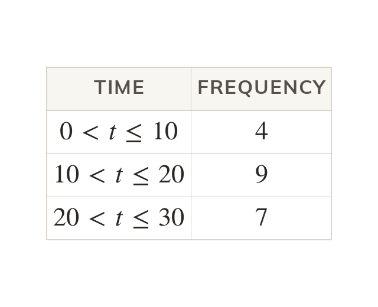
Grouping hides the values
When data are grouped, the exact values are lost. So the mean of grouped data can only be estimated.
Surveys often record data in groups, such as ages to
Today we estimate a mean when the exact values are lost.
Work down the page at your own pace. Write every answer in your book first, then click to check it.
Read each card, then follow the worked examples one step at a time.

When data are grouped, the exact values are lost. So the mean of grouped data can only be estimated.
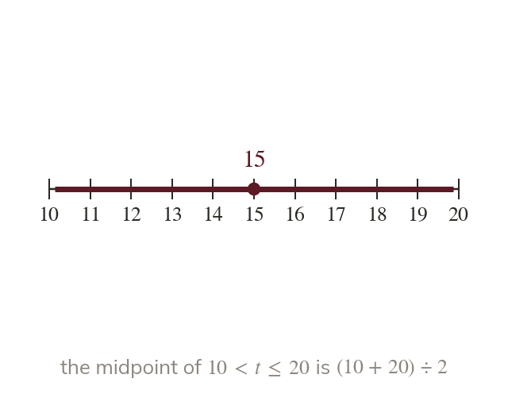
Each value in a class is taken as its midpoint. The midpoint of is
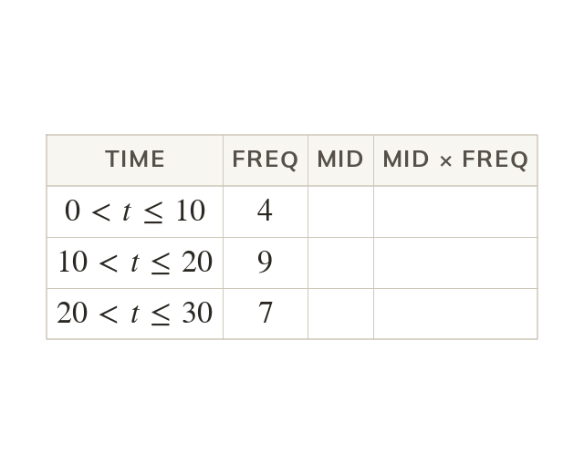
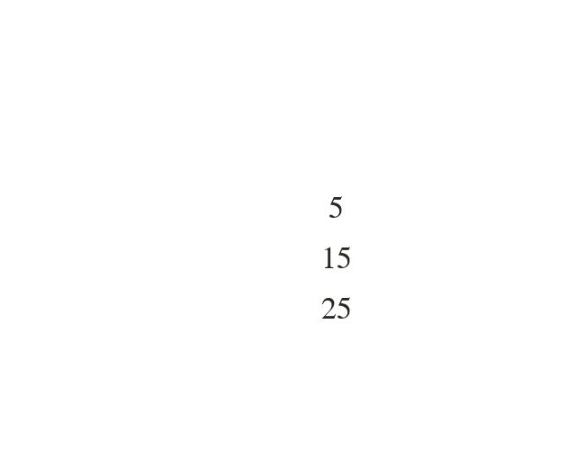
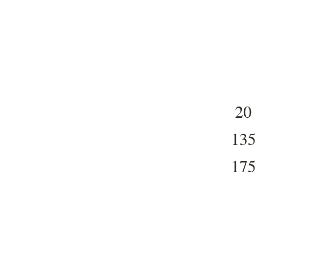
Multiply each midpoint by its frequency, and add. Divide by the total frequency. Here, minutes.
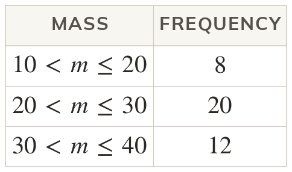
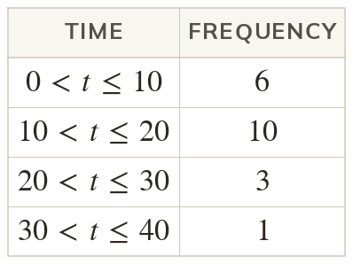
Pick an answer. If it's wrong, the feedback tells you which mistake it was.
Write the blanks in your book first, then tap each one to check.
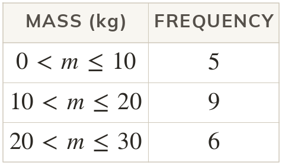
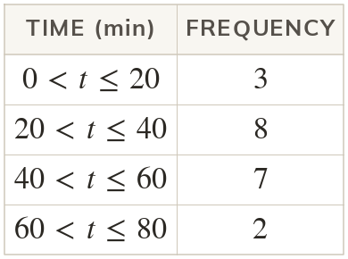
Read each card, then follow the worked examples one step at a time.
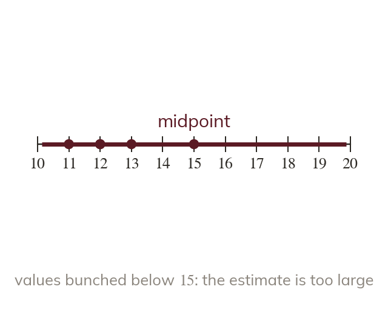
The estimate treats every value in a class as its midpoint. It is exact only if values spread evenly about the midpoint.
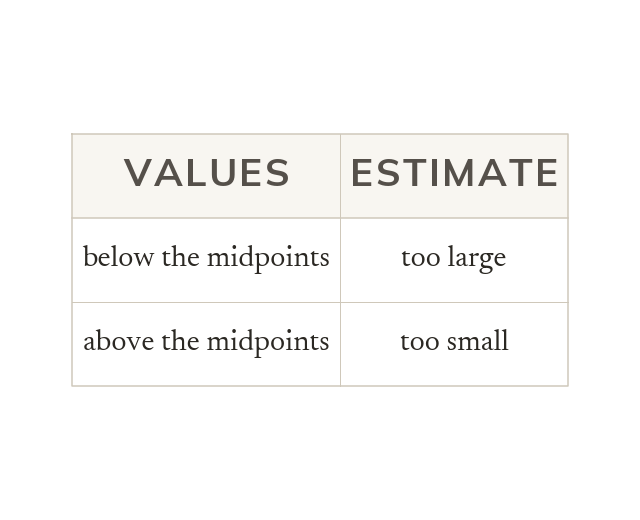
If the values sit mostly below their class midpoints, the estimate is too large. If they sit mostly above, it is too small.
Pick an answer. If it's wrong, the feedback tells you which mistake it was.
Write the blanks in your book first, then tap each one to check.
Finished? Next lesson: 10.18.4 The Modal and Median Class.
For each skill, tap the one that is true for you today. Your Revise pages start with anything you mark Not yet.
Your ratings are saved on this device only.
Log in, then search for a code to practise that skill.